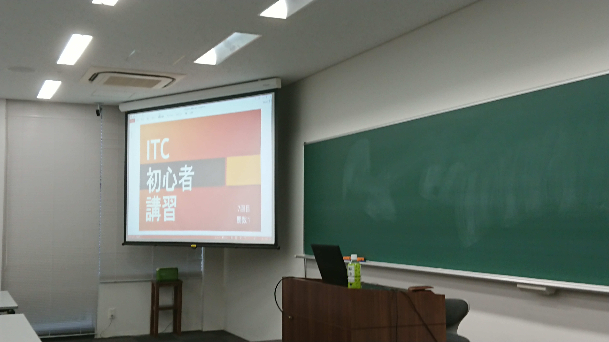

制作環境は自由で、CやC++、C#など、それぞれ好きな言語を使用しています。プログラミング初学者に向けた初心者講習も行っており、そちらではC++を扱っています。
Prog部ではゲーム制作と競プロの２つを主にやっています
目標
ゲーム制作がメインなので講習ではC++とDxライブラリを教えており、例年制作したゲームを理大祭に展示します。
またデジゲー博にも毎年応募しており、当選すれば会場での頒布もします。
初心者講習
毎年プログラミング未経験者に向けて講習会を行っています。言語は例年C++を教えています。
ゲームを作るためのライブラリとして、Dxライブラリも扱います。各部員たちは講習会の内容をもとにゲーム制作を進めていきます。
競技プログラミング
初心者講習とは別に、競技プログラミングも行っています。
毎週１回AtCoderの過去問をバーチャルコンテストで解いていきます。AtCoderの過去問を時間内に解き、タイムや解けた問題数を競っています。
プログラミングの能力を伸ばすいい機会でもあります。
AtCoderのサイトへはこちら
AtCoder
理大祭
理大祭はprogが中心となって行っています。これまで自分たちが作ったゲームをCDにまとめ販売しています。
当日はパソコンでゲームを試遊してもらっています。子供たちもかなりの人数が例年やってきます。

デジゲー博
例年デジゲー博に応募しています。抽選すればゲームを展示・販売します。
Prog年間活動予定
| ４月 | 新入生勧誘期間 |
| ５月 | 初心者講習開始 |
| ６月 | |
| ７月 | |
| ８月 | 夏休み(理大祭・デジゲー博に向けて制作) 夏合宿 |
| ９月 | |
| １０月 | |
| １１月 | デジゲー博(当選すれば) 理大祭 |
| １２月 | |
| １月 | |
| ２月 | 春休み |
| ３月 | 春合宿 |